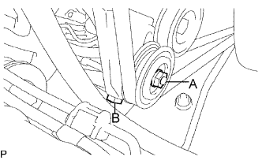
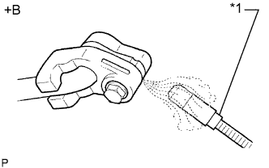

КОМПРЕССОР (для моделей с 5L-E) > УСТАНОВКА |
| 1. ОТРЕГУЛИРУЙТЕ УРОВЕНЬ КОМПРЕССОРНОГО МАСЛА |
В случае замены компрессора новым постепенно выпустите газообразный хладагент через рабочий клапан и слейте указанное ниже количество масла из нового компрессора перед его установкой.
| 2. УСТАНОВИТЕ КОМПРЕССОР СИСТЕМЫ КОНДИЦИОНИРОВАНИЯ В СБОРЕ |
Временно установите компрессор системы кондиционирования и закрепите его 2 болтами.
Временно закрепите опорный шкив 4 болтами.
Затяните 6 болта в порядке, указанном на рисунке.
Подсоедините разъем.
| 3. ПОДСОЕДИНИТЕ ТРУБКУ НИЗКОГО ДАВЛЕНИЯ КОНДИЦИОНЕРА № 1 |
Снимите с трубопровода виниловую ленту.
Нанесите необходимое количество компрессорного масла на новое кольцевое уплотнение и пригоночную поверхность компрессора.
Установите кольцевое уплотнение на трубопровод низкого давления.
Подсоедините трубопровод низкого давления к компрессору и закрепите его болтом.
| 4. ПОДСОЕДИНИТЕ ТРУБОПРОВОД ВЫСОКОГО ДАВЛЕНИЯ НА ВЫХОДЕ КОМПРЕССОРА № 1 |
Снимите с трубопровода виниловую ленту.
Нанесите необходимое количество компрессорного масла на новое кольцевое уплотнение и пригоночную поверхность компрессора.
Установите кольцевое уплотнение на трубопровод высокого давления.
Подсоедините трубопровод высокого давления к компрессору и закрепите болтом.
| 5. УСТАНОВИТЕ ПОЛИКЛИНОВОЙ РЕМЕНЬ КОМПРЕССОРА СИСТЕМЫ КОНДИЦИОНИРОВАНИЯ |
Установите поликлиновой ремень.
|  |
Отрегулируйте натяжение поликлинового ремня с помощью болта B.
Затяните гайку А.
Проверьте натяжение поликлинового ремня (Нажмите здесь).
| 6. УСТАНОВИТЕ КОРПУС ВОЗДУШНОГО ФИЛЬТРА В СБОРЕ |
Install the air cleaner case with the 3 bolts.
| 7. УСТАНОВИТЕ ФИЛЬТРУЮЩИЙ ЭЛЕМЕНТ ВОЗДУШНОГО ФИЛЬТРА В СБОРЕ |
| 8. УСТАНОВИТЕ КРЫШКУ ВОЗДУШНОГО ФИЛЬТРА В СБОРЕ |
Вставьте петли крышки воздушного фильтра и шланг в корпус воздушного фильтра, а затем закрепите 4 откидных защелки.
Установите крышку воздушного фильтра и закрепите ее зажимом.
Закрепите зажим жгута проводов.
Подсоедините 2 зажима и разъем.
| 9. ЗАПРАВЬТЕ ХЛАДАГЕНТ |
Используя вакуумный насос, выполните вакуумную очистку.
Заправьте хладагент HFC-134a (R134a).
| Код модели | Тип системы кондиционирования | Блок охлаждения | Заправочный объем хладагента |
| Кроме моделей, перечисленных ниже | Для моделей без заднего кондиционера | Для моделей с холодильной камерой | 600 +/-30 г (21,2 +/-1,1 унции) |
| Для моделей без холодильной камеры | 550 +/-30 г (19,3 +/-1,1 унции) | ||
| Для моделей с задним кондиционером | Для моделей с холодильной камерой | 800 +/-30 г (28,2 +/-1,1 унции) | |
| Для моделей без холодильной камеры | 770 +/-30 г (27,2 +/-1,1 унции) | ||
| Для моделей с задним кондиционером Для моделей, предназначенных для эксплуатации в холодном климате | Для моделей без холодильной камеры | 720 +/-30 г (25,3 +/-1,1 унции) | |
| TRJ150L-GKMEKV TRJ150L-GKPEKV TRJ155L-GJPEKV GRJ150L-GKFEKV GRJ150L-GKAEKV KDJ150L-GKFEYV KDJ150L-GKAEYV | Для моделей без заднего кондиционера | Для моделей с холодильной камерой | 600 +/-30 г (21,2 +/-1,1 унции) |
| Для моделей без холодильной камеры | 550 +/-30 г (19,3 +/-1,1 унции) или 600 +/-30 г (21,2 +/- 1,1 унции) *1 | ||
| Для моделей с задним кондиционером | Для моделей с холодильной камерой | 800 +/-30 г (28,2 +/-1,1 унции) | |
| Для моделей без холодильной камеры | 770 +/-30 г (27,2 +/-1,1 унции) |

| 10. УСТАНОВИТЕ ВЕРХНЕЕ УПЛОТНЕНИЕ КРОНШТЕЙНА РАДИАТОРА |
Установите верхнее уплотнение кронштейна радиатора и закрепите его 13 фиксаторами.
| 11. ПРОГРЕЙТЕ ДВИГАТЕЛЬ |
После заправки хладагента в течение, по крайней мере, 2 мин. прогрейте двигатель при частоте вращения коленчатого вала 1850 об/мин.
| 12. ПРОВЕРЬТЕ, НЕТ ЛИ УТЕЧЕК ГАЗООБРАЗНОГО ХЛАДАГЕНТА |
После заправки газообразного хладагента с помощью галогенного течеискателя проверьте, нет ли утечек хладагента.
Перед проверкой обеспечьте выполнение следующих условий:
|  |
С помощью галогенного течеискателя проверьте, нет ли утечки из трубопровода хладагента.
| *1 | Галогенный течеискатель |
| *a | Проверка на наличие утечек |
Если в сливном шланге утечка газа не обнаруживается, снимите блок управления электродвигателем вентилятора (сопротивление вентилятора) с блока охлаждения. Вставьте датчик галогенного течеискателя в блок и выполните испытание.
Отсоедините разъем и подождите примерно 20 мин. Поднесите галогенный течеискатель к контактному датчику давления и выполните испытание.